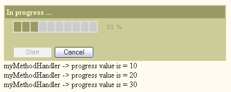

examples TOC
examples TOC$Date$
 Introduction
IntroductionThis example will run a default ProgressBar Monitor, handled by class-method user callback. Used default QuickForm renderer with a non-standard color scheme for form template and progress bar.
[Top]
 PHP script
PHP scriptUser-Callback
<?php
// progressHandler.php
class myClassHandler
{
function myMethodHandler($progressValue, &$obj)
{
if (fmod($progressValue,10) == 0) {
echo "myMethodHandler -> progress value is = $progressValue <br/>\n";
}
}
}
?>
[Top]
 Render options
Render options Used a pre-set UI model: Progress_Default2 in file progressModels.php
Here are the progress attributes:background-color = #e0e0e0
color = #996 background-color = #CCCC99
active-color = #996
[Top]
 Output
Output
[Top]
 Play full example
Play full exampleRun the script below :
<?php
require_once 'HTML/Progress/monitor.php';
require_once 'progressModels.php';
require_once 'progressHandler.php';
$monitor = new HTML_Progress_Monitor('frmMonitor3', array(
'button' => array('style' => 'width:80px;')
)
);
$monitor->setProgressHandler(array('myClassHandler','myMethodHandler'));
// Attach a progress ui-model (see file progressModels.php for attributes definition)
$progress = new HTML_Progress();
$progress->setUI('Progress_Default2');
$progress->setAnimSpeed(50);
$monitor->setProgressElement($progress);
?>
<html>
<head>
<title>ProgressBar Monitor - Default renderer </title>
<style type="text/css">
<!--
.progressStatus {
color:#000000;
font-size:10px;
}
<?php echo $monitor->getStyle(); ?>
// -->
</style>
<script type="text/javascript">
<!--
<?php echo $monitor->getScript(); ?>
//-->
</script>
</head>
<body>
<?php
$renderer =& HTML_QuickForm::defaultRenderer();
$renderer->setFormTemplate('
<table width="450" border="0" cellpadding="3" cellspacing="2" bgcolor="#CCCC99">
<form{attributes}>{content}
</form>
</table>
');
$renderer->setHeaderTemplate('
<tr>
<td style="white-space:nowrap;background:#996;color:#ffc;" align="left" colspan="2"><b>{header}</b></td>
</tr>
');
$monitor->accept($renderer);
echo $renderer->toHtml();
$monitor->run();
?>
</body>
</html>
[Top]